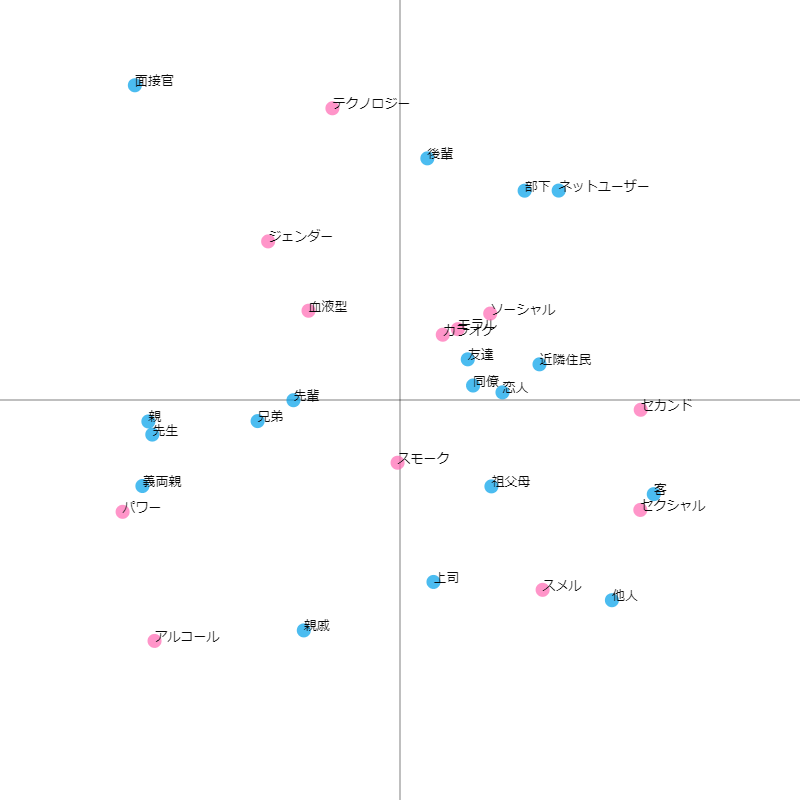
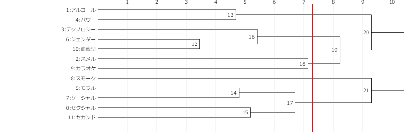

コレスポンデンス分析とクラスター分析
テーマについて
我々のグループではハラスメントについて分析を行いました。 近年様々なハラスメント問題が問題になっているためこのテーマを設定しました。
コレスポンデンス分析
読み込みデータ
| 上司 | 部下 | 同僚 | 恋人 | 友達 | ネットユーザー | 客 | 親 | 兄弟 | 祖父母 | 親戚 | 先生 | 先輩 | 後輩 | 他人 | 近隣住民 | 面接官 | 義両親 | |
|---|---|---|---|---|---|---|---|---|---|---|---|---|---|---|---|---|---|---|
| セクシャル | 5 | 1 | 5 | 5 | 3 | 5 | 5 | 1 | 2 | 3 | 4 | 2 | 2 | 2 | 3 | 2 | 1 | 1 |
| アルコール | 5 | 1 | 4 | 2 | 3 | 1 | 1 | 4 | 3 | 1 | 5 | 4 | 4 | 1 | 2 | 1 | 1 | 3 |
| スメル | 4 | 3 | 3 | 2 | 2 | 1 | 5 | 2 | 2 | 3 | 3 | 2 | 4 | 2 | 5 | 2 | 1 | 2 |
| テクノロジー | 1 | 4 | 4 | 2 | 2 | 4 | 2 | 2 | 2 | 1 | 2 | 3 | 4 | 4 | 1 | 1 | 3 | 2 |
| パワー | 5 | 1 | 3 | 2 | 2 | 3 | 3 | 4 | 3 | 2 | 4 | 5 | 4 | 1 | 1 | 1 | 3 | 5 |
| モラル | 5 | 4 | 5 | 3 | 4 | 5 | 3 | 4 | 3 | 3 | 3 | 3 | 2 | 3 | 3 | 4 | 3 | 2 |
| ジェンダー | 3 | 2 | 3 | 3 | 3 | 3 | 2 | 4 | 3 | 2 | 2 | 3 | 3 | 3 | 2 | 3 | 5 | 2 |
| ソーシャル | 3 | 3 | 5 | 4 | 4 | 5 | 3 | 3 | 3 | 2 | 2 | 2 | 4 | 3 | 2 | 2 | 1 | 2 |
| スモーク | 3 | 3 | 5 | 5 | 3 | 1 | 3 | 5 | 5 | 4 | 4 | 2 | 4 | 4 | 3 | 5 | 1 | 3 |
| カラオケ | 3 | 2 | 3 | 2 | 4 | 1 | 1 | 1 | 1 | 1 | 1 | 1 | 4 | 2 | 1 | 1 | 1 | 1 |
| 血液型 | 3 | 2 | 3 | 3 | 2 | 4 | 3 | 3 | 3 | 2 | 2 | 3 | 3 | 2 | 1 | 2 | 3 | 3 |
| セカンド | 5 | 3 | 4 | 2 | 3 | 5 | 5 | 1 | 1 | 1 | 2 | 2 | 2 | 1 | 2 | 3 | 1 | 2 |
プロットデータ
表側
| 0 | 1 | |
|---|---|---|
| セクシャル | 0.300406 | -0.137402 |
| アルコール | -0.306824 | -0.301149 |
| スメル | 0.178265 | -0.237286 |
| テクノロジー | -0.084492 | 0.364635 |
| パワー | -0.346747 | -0.139787 |
| モラル | 0.072319 | 0.088539 |
| ジェンダー | -0.164824 | 0.198247 |
| ソーシャル | 0.112756 | 0.108057 |
| スモーク | -0.003033 | -0.078415 |
| カラオケ | 0.053457 | 0.081619 |
| 血液型 | -0.114357 | 0.111588 |
| セカンド | 0.300879 | -0.012208 |
表頭
| 0 | 1 | |
|---|---|---|
| 上司 | 0.041850 | -0.227432 |
| 部下 | 0.155782 | 0.261654 |
| 同僚 | 0.091340 | 0.018093 |
| 恋人 | 0.128098 | 0.009568 |
| 友達 | 0.084696 | 0.050839 |
| ネットユーザー | 0.198325 | 0.261787 |
| 客 | 0.317207 | -0.117720 |
| 親 | -0.314543 | -0.026797 |
| 兄弟 | -0.177998 | -0.026371 |
| 祖父母 | 0.114268 | -0.107974 |
| 親戚 | -0.120244 | -0.288009 |
| 先生 | -0.309640 | -0.043206 |
| 先輩 | -0.133164 | -0.000270 |
| 後輩 | 0.034184 | 0.302055 |
| 他人 | 0.264876 | -0.250271 |
| 近隣住民 | 0.174377 | 0.044593 |
| 面接官 | -0.331431 | 0.393398 |
| 義両親 | -0.322007 | -0.107519 |
クラスター分析
linkage
| 0 | 1 | 2 | 3 | |
|---|---|---|---|---|
| 0 | 6.0 | 10.0 | 3.464102 | 2.0 |
| 1 | 1.0 | 4.0 | 4.690416 | 2.0 |
| 2 | 5.0 | 7.0 | 4.795832 | 2.0 |
| 3 | 0.0 | 11.0 | 5.196152 | 2.0 |
| 4 | 3.0 | 12.0 | 5.416026 | 3.0 |
| 5 | 14.0 | 15.0 | 6.708204 | 4.0 |
| 6 | 2.0 | 9.0 | 7.141428 | 2.0 |
| 7 | 16.0 | 18.0 | 8.225975 | 5.0 |
| 8 | 13.0 | 19.0 | 9.304377 | 7.0 |
| 9 | 8.0 | 17.0 | 9.305912 | 5.0 |
| 10 | 20.0 | 21.0 | 10.416105 | 12.0 |
その他
×